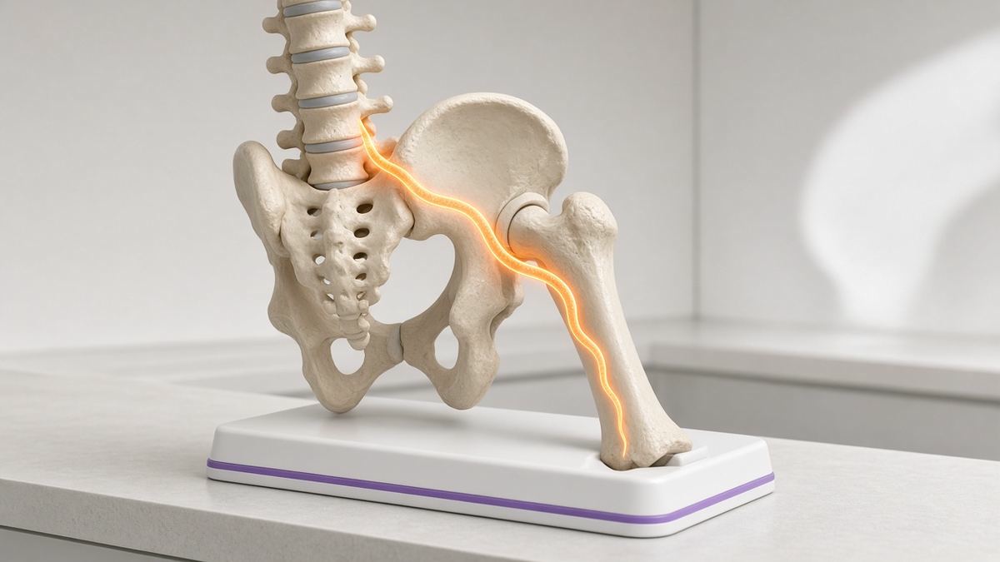

Sciatica is pain that travels along the sciatic nerve, from the low back or buttock down the back of the leg. It usually happens when something irritates or presses on the nerve roots in the low back. Chiropractic care, guided movement and a few daily changes help many people get relief without medication or surgery.
Plenty of people call any low back pain sciatica. True sciatic pain behaves differently. It runs down one leg, can feel sharp, burning or electric, and often comes with tingling or numbness. Knowing the difference helps you get the right care sooner.
What is the sciatic nerve?
The sciatic nerve is the longest and widest nerve in the body. It forms from several nerve roots in the lower spine, passes through the buttock, and runs down the back of each thigh, branching to supply the lower leg and foot. When one of those roots is irritated, pain can follow the nerve’s path all the way down.
Common signs of sciatica
- Pain that starts in the low back or buttock and travels down the back of one leg.
- Sharp, burning or shooting pain, sometimes described as electric.
- Tingling, pins and needles, or numbness in the leg or foot.
- Pain that gets worse after sitting a long time, or with a cough or sneeze.
- Weakness in the leg or foot on the affected side.
What causes it?
The most common cause is a bulging or herniated disc in the low back that puts pressure on a nerve root. Other causes include narrowing of the spaces where nerves exit the spine, joint changes that come with age, and tight muscles deep in the buttock. Long hours of sitting, heavy lifting, carrying gear, and long drives can all make it worse. In West Georgetown we see it in desk workers, drivers, parents and active-duty families alike.
How chiropractic care helps sciatic pain
Our first job is to find where the irritation is coming from. Your visit starts with your history, then an exam of how your low back and hips move, along with strength, reflex and sensation checks. If your exam suggests imaging or a medical opinion is needed first, we arrange or refer for it.
When chiropractic care is a good fit, a plan for sciatica often includes:
- Gentle adjustments to improve movement in the low back and pelvis, using low-force options when the leg is very irritated.
- Soft-tissue work for tight muscles in the low back, hips and buttock.
- Corrective exercise to take pressure off the nerve first, then build core and hip strength.
- Advice on sitting, sleeping and lifting so you stop aggravating it during the day.
Many people notice the leg pain easing before the back feels fully normal, which is usually a good sign. We will give you a realistic plan after your first visit and adjust it as you improve. We cannot promise a specific result, and if progress stalls we will tell you and talk about other options.
Habits that help sciatica settle
- Break up sittingStand up and move every 30 minutes. On long drives, plan short stops.
- Keep walkingEasy walks on flat ground often calm nerve pain better than resting all day.
- Mind your wallet and seatSitting on a thick wallet or a sagging seat can press on the buttock. Use a firm seat with some low back support.
- Lift close, bend your kneesKeep loads close and avoid twisting while you lift.
- Sleep supportedTry a pillow between your knees on your side, or under your knees on your back.
Related: sciatica care, disc injury and low back pain.